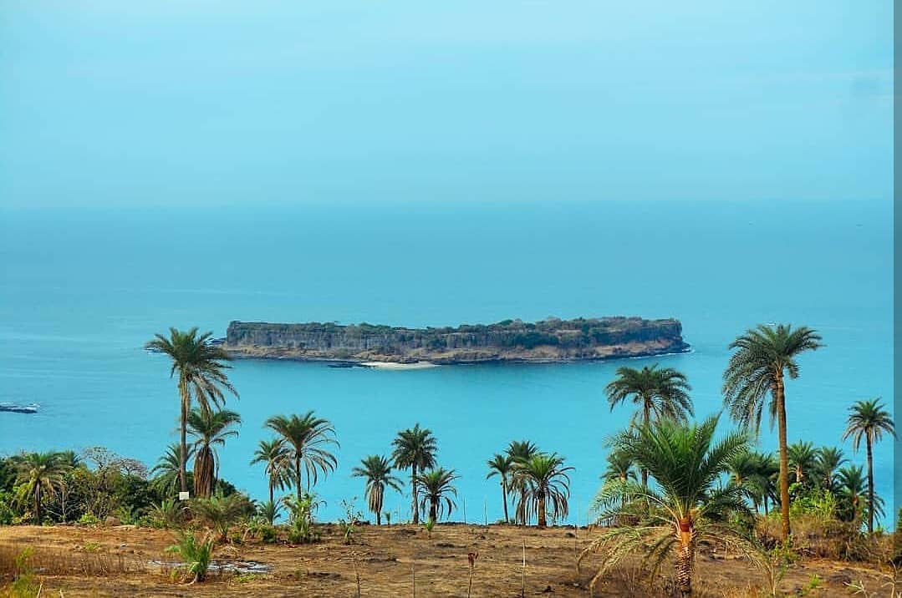
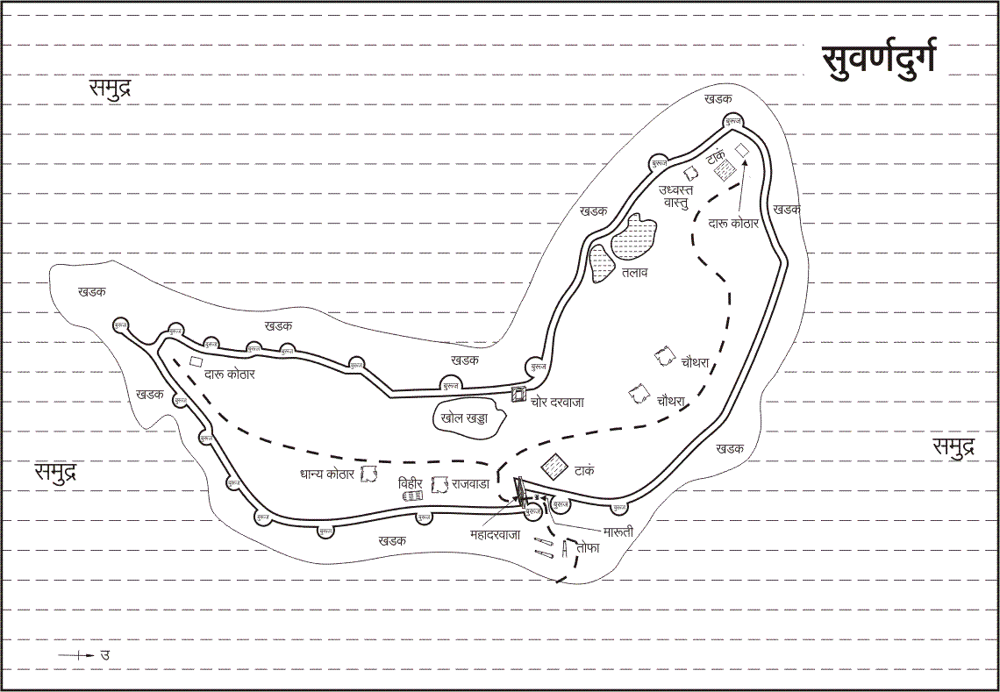
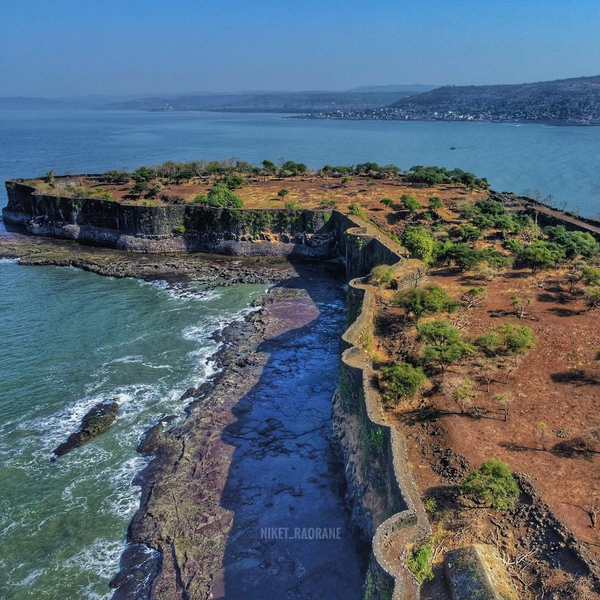
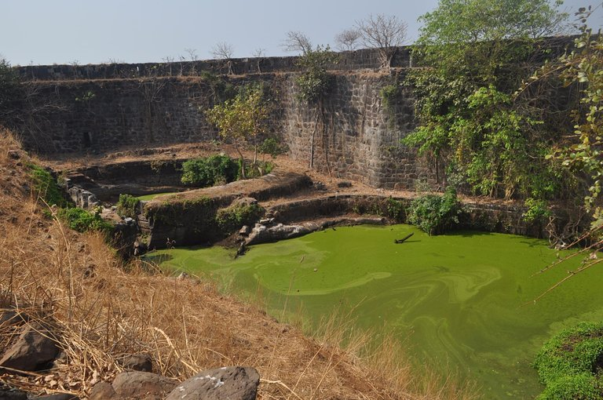
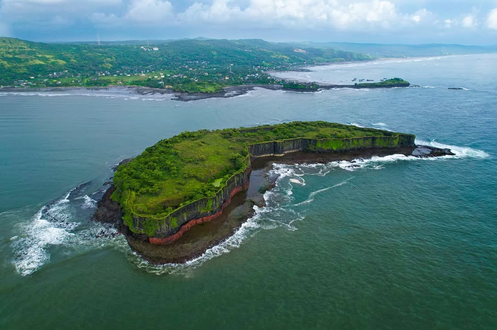
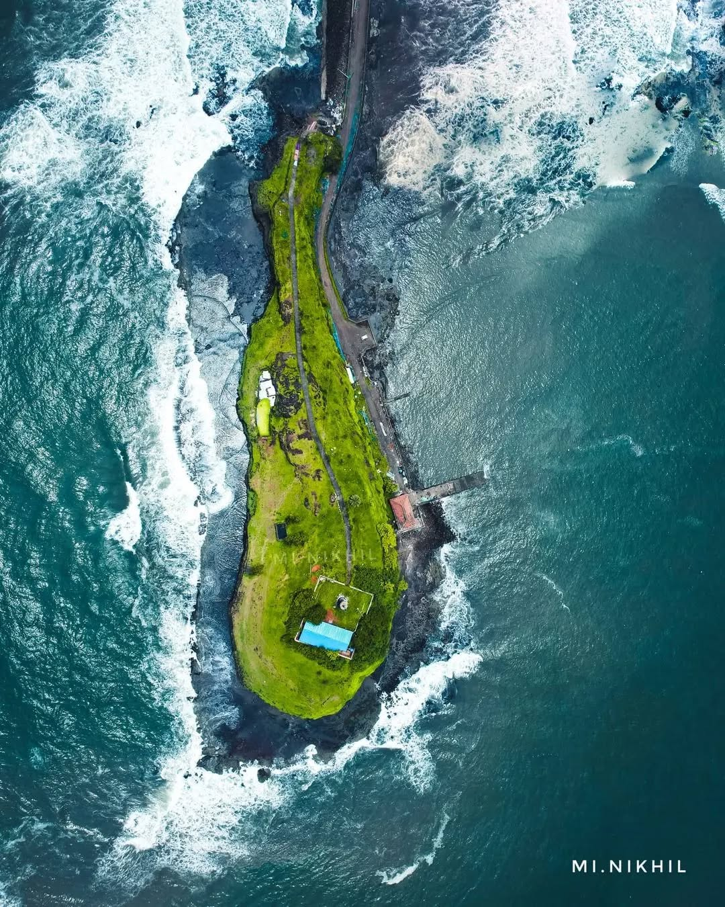
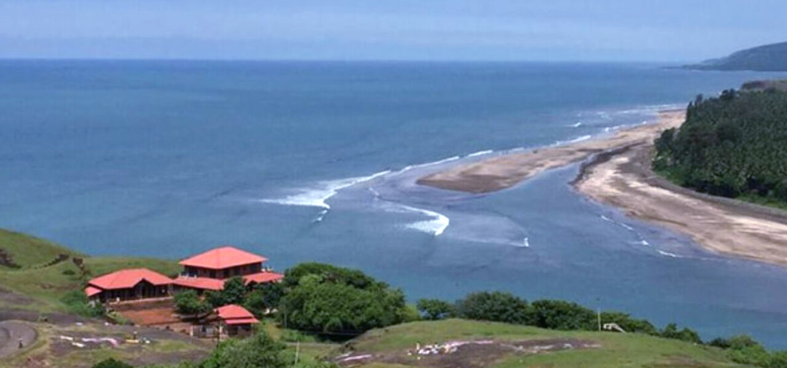
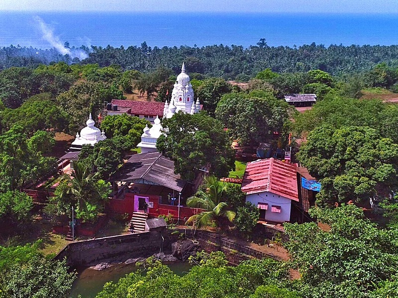

Suvarnadurg Fort





Suvarnadurg Fort, a splendid 17th-century coastal stronghold, stands as a testament to Maratha maritime supremacy near the coastal town of Dapoli in Maharashtra. Commissioned by the visionary Maratha ruler Chhatrapati Shivaji Maharaj, this fortification played a crucial role in securing the Maratha Empire's western coastline from naval incursions and foreign invasions. Strategically positioned on a rocky island approximately 1 kilometer off the Harnai coastline, Suvarnadurg is surrounded by the Arabian Sea, making it accessible only by boat. Its formidable stone walls and bastions, stretching across a significant area, reflect its robust defensive design, many features of which have withstood the ravages of time. The fort's seamless integration with the natural environment and its location on the Arabian Sea made it an unassailable fortress against enemy forces.One of Suvarnadurg's remarkable features is its ingenious water management system, including freshwater reservoirs that ensured a reliable water supply for its inhabitants, an impressive achievement for a sea fort. The fort also encompasses a temple dedicated to Lord Hanuman, which continues to hold spiritual significance. Within the fort complex, visitors can explore remnants of barracks, granaries, and military storage facilities, showcasing its self-sufficient infrastructure. Suvarnadurg Fort, steeped in history and architectural brilliance, remains a proud emblem of the Maratha naval legacy.

Suvarnadurg is part of a unique twin-fort system along with Kanakdurga, a smaller land fort on the nearby coastline. The two forts were interconnected via underground passages and served complementary roles in defense, communication, and surveillance.

Despite being a sea fort, Suvarnadurg has freshwater reservoirs and wells, showcasing advanced engineering techniques to sustain its inhabitants with a reliable water supply.The fort's ability to store and utilize freshwater in the midst of the sea exemplifies the advanced system.

Suvarnadurg's location in the Arabian Sea provided the Maratha navy with a stronghold to control maritime trade routes, monitor enemy movements, and establish naval dominance along the western coastline of India.Its isolation on a rocky island made it nearly impenetrable.

The Mahadarwaja, or the main entrance of Suvarnadurg Fort, is an imposing structure that highlights the architectural brilliance of the Maratha era. This grand gateway, facing the mainland, is adorned with intricate carvings, including motifs of Hanuman and a turtle, symbolizing strength and stability. The Mahadarwaja served as the primary point of entry, equipped with massive wooden doors reinforced with iron spikes to withstand enemy attacks. It reflects the strategic importance of the fort as a defensive stronghold and sets the tone for the grandeur and resilience seen throughout the fort's design.

The interior of Suvarnadurg Fort is dotted with the ruins of various buildings, offering a glimpse into the lives of its former inhabitants. These remnants include administrative quarters, storage facilities, and residential areas, which were essential for managing the fort’s operations and housing its defenders. Though weathered by time, the stone foundations and remnants of walls reveal the ingenuity of the fort's construction, designed to endure the harsh coastal environment. Exploring these ruins provides visitors with a tangible connection to the fort's storied past and the bustling activity it once hosted.

Suvarnadurg Fort is home to several ancient cannons strategically placed on its bastions, a testament to its military significance during the Maratha era. These cannons, crafted from iron and bronze, were positioned to guard against naval attacks and maintain control over the surrounding waters. The bastions themselves are marvels of engineering, with wide platforms and angular designs to optimize the firing range. The sight of these cannons, still standing against the backdrop of the Arabian Sea, evokes the fort's legacy as a formidable maritime defense outpost.

Distance: 1 km
Kanakadurga Fort, situated near Harnai port on the mainland, is a smaller yet strategically significant fort historically linked to Suvarnadurg Fort. It was built as part of the coastal defense system during the Maratha Empire.

Distance: 17 km
Dapoli, often referred to as "Mini Mahabaleshwar", is a serene hill station in the Ratnagiri district of Maharashtra.It is a popular tourist destination due to its pleasant climate, lush greenery, and a mix of historical, cultural, and natural attractions.

Distance: 2 km
Just a short distance from the fort, Harnai Beach is a serene spot known for its scenic beauty and vibrant fishing activities. Visitors can enjoy relaxing walks along the shore or explore the bustling Harnai fish market.

Distance: 4 km
The Shri Ganesh Temple in Anjarle, commonly known as Kadyawarcha Ganpati, is a revered Hindu temple dedicated to Lord Ganesha. Located approximately 3.5 km from Suvarnadurg Fort, this ancient temple is perched atop a small hill.